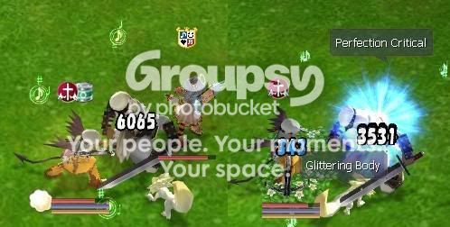

คราวนี้บัพเต็มสูบ เอ้า อาละวาด !!!
จาก รูป ทางซ้ายเป็น Dual Arrow ทางขวาเป็น Plurilary Arrow

ขอขอบคุณความร่วมมือจาก Rest•in•Peace แล้วก็ Comelyfay สุดที่ร๊าก ที่มาช่วยกันบัพ =w=
ว่าไงล่า Gunner ท้างหลาย เปลี่ยนใจมิ๊
ปล. ทำได้สูงสุดนัดละ 3800 แต่เนื่องจากไม่ชัดเจนจึงขอนำลงเพียงแค่นี้